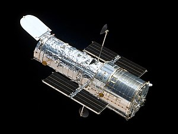
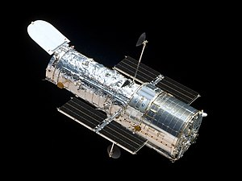

Bumi dan Satelitnya
 

Apa itu Satelit?
Satelit adalah benda yang mengorbit sebuah objek yang lebih besar di luar angkasa, seperti planet atau bintang, berdasarkan prinsip gravitasi. Ada dua jenis utama satelit: satelit alami dan satelit buatan.
Satelit Alami Bumi
Bulan adalah satu-satunya satelit alami Bumi yang telah dikenal dan dipelajari sejak zaman kuno. Bulan mengorbit Bumi dalam waktu sekitar 27,3 hari dan memainkan peran penting dalam berbagai fenomena alam di Bumi, seperti pasang surut air laut dan stabilitas rotasi planet kita. Dengan diameter sekitar 3.474 kilometer, Bulan adalah objek terbesar dan paling terang di langit malam setelah Matahari. Bulan juga telah menjadi tujuan utama dalam penjelajahan luar angkasa manusia, dengan misi Apollo yang pertama kali mendaratkan manusia di Bulan pada tahun 1969.
Satelit Buatan(GPS Satelite)
GPS Satellites adalah sistem navigasi berbasis satelit yang memungkinkan pengguna di seluruh dunia menentukan lokasi mereka dengan akurasi tinggi. Terdiri dari 24 satelit utama yang mengorbit Bumi, sistem ini menggunakan sinyal waktu dan informasi posisi dari satelit untuk menghitung lokasi pengguna melalui metode trilateration. GPS digunakan dalam berbagai bidang, dari militer hingga navigasi sehari-hari, dan dapat mencapai akurasi beberapa meter, atau bahkan sentimeter dengan teknologi tambahan. Sistem ini dikembangkan dan dikelola oleh Departemen Pertahanan Amerika Serikat.
Satelit Buatan(Hubble Space Telescope)
Hubble Space Telescope adalah teleskop luar angkasa yang diluncurkan oleh NASA dan ESA pada tahun 1990 untuk mengamati bintang, galaksi, dan benda langit lainnya. Mengorbit Bumi pada ketinggian sekitar 547 km, Hubble dilengkapi dengan instrumen canggih untuk mengamati berbagai panjang gelombang cahaya. Teleskop ini telah membantu menemukan banyak penemuan penting seperti mengukur kecepatan ekspansi alam semesta dan mengamati galaksi-galaksi jauh. Dirancang untuk dapat dirawat dan ditingkatkan, Hubble masih aktif beroperasi dan akan dibantu oleh teleskop baru seperti James Webb Space Telescope di masa depan.